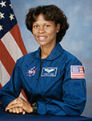

Lyndon B. Johnson Space Center
Houston, Texas 77058
|
National Aeronautics and Space Administration Lyndon B. Johnson Space Center Houston, Texas 77058 |
 |
Biographical Data |
||
Yvonne Darlene Cagle, M.D. (Colonel, U.S. AIR FORCE, RET.)
Space and Life Sciences Directorate
Johnson Space Center
Pronunciation: EE-von KAY-gull
PERSONAL DATA: Born in West Point, New York, but considers Novato, California, to be her hometown. Enjoys jigsaw puzzles, juggling, skating, hiking, music, writing, public speaking, and historical novels.
EDUCATION: Novato High School, Novato, California, in 1977; received a Bachelor of Arts in Biochemistry from San Francisco State University in 1981, and a Doctorate in Medicine from the University of Washington in 1985. Transitional internship at Highland General Hospital, Oakland, California, in 1985. Received certification in Aerospace Medicine from the School of Aerospace Medicine at Brooks Air Force Base, Texas, in 1988. Completed residency in at Ghent Family Practice at Eastern Virginia Medical School in 1992. Received certification as a senior aviation medical examiner from the Federal Aviation Administration in 1995. Received an honorary Ph.D. in Humanities from Fordham University in 2014.
ORGANIZATIONS: Boys and Girls Club; Aerospace Medical Association; Third Baptist Church; American Academy of Family Physicians.
AWARDS: Outstanding Young Women of America; National Defense Service Medal; Air Force Achievement Medal; U.S. Air Force Air Staff Exceptional Physician Commendation; National Technical Association Distinguished Scientist Award; Commendation Marin County Board of Supervisors; Commendation Novato School Board; Honorary Ph.D. in Humanities, Fordham University; Honorary appointment, University of Wisconsin-Madison.
EXPERIENCE: Cagle’s medical training was sponsored by the Health Professions Scholarship Program, through which she received her commission as an officer with the United States Air Force, and subsequently was awarded her board certification in family practice. During her initial active duty tour at Royal Air Force Lakenheath, United Kingdom, she was selected to attend the School of Aerospace Medicine at Brooks Air Force Base, Texas. In April 1988, she became certified as a flight surgeon logging numerous hours in a wide range of aircraft. She was actively involved in mission support of aircraft providing medical support and rescue in a variety of aeromedical missions.
From 1994 to 1996, Cagle served as the Deputy Project Manager for Kelsey-Seybold Clinics, practicing as an occupational physician at NASA’s Johnson Space Center’s Occupational Health Clinic, in Houston, Texas. In addition to conducting job-related exams, routine health screenings, and providing acute care for onsite injuries and illness, she designed the medical protocols and conducted the screenings for select NASA remote duty operations.
Cagle is a consulting professor for Stanford University’s Department of Cardiovascular Medicine and to the Department of Electrical Engineering, where she has conducted and published research on various biotechnologies. She is on the Advisory Committee for the National Center for Human Performance at the Texas Medical Center. Cagle is also a Clinical Assistant Professor at the University of Texas Medical Branch, Galveston, Texas and has served on the Volunteer Family Practice Clinical Faculty at the University of California, Davis, California. While with the U.S. Air Force, she was assigned to the Pentagon Flight Medicine/Special Mission Clinic. Cagle is a certified FAA Senior Aviation Medical Examiner and has been ACLS Instructor qualified.
NASA EXPERIENCE: During May 1989, while a flight surgeon assigned to the 48th Tactical Hospital, United Kingdom, Cagle volunteered to serve as the Air Force Medical Liaison Officer for the STS-30 Atlantis shuttle mission to test the Magellan spacecraft. She was assigned to the Trans Atlantic Landing (TAL) site at Banjul, West Africa, to provide emergency rescue and evacuation of the shuttle crew should it have been required. Cagle has contributed ongoing data to the Longitudinal Study on Astronaut Health, and served as a consultant for space telemedicine. She was a member of the NASA Working Group and traveled to Russia to establish international medical standards and procedures for astronauts. She also conducted health screenings of Mir-18 consultants from the Russian Federation.
Selected by NASA in April 1996, Cagle reported to NASA’s Johnson Space Center, located in Houston, Texas in August 1996. She completed two years of training and evaluation, and is qualified for flight assignment as a mission specialist. Initially assigned to the Astronaut Office Operations Planning branch, supporting the Space Shuttle Program and International Space Station, followed by a special assignment to NASA’s Ames Research Center. Cagle is currently on detail to Fordham University as a visiting professor, and awarded an honorary Ph.D. by Fordham University for her substantial and significant contributions to the fields of science, technology and human health. Prior assignments include the lead ARC Astronaut Science Liaison and Strategic Relationships Manager for Google and other Silicon Valley Programmatic Partnerships. Cagle’s groundbreaking work is preserving historic NASA space legacy data while, simultaneously, galvanizing NASA’s lead in global mapping, sustainable energies, green initiatives and disaster preparedness.
SEPTEMBER 2014